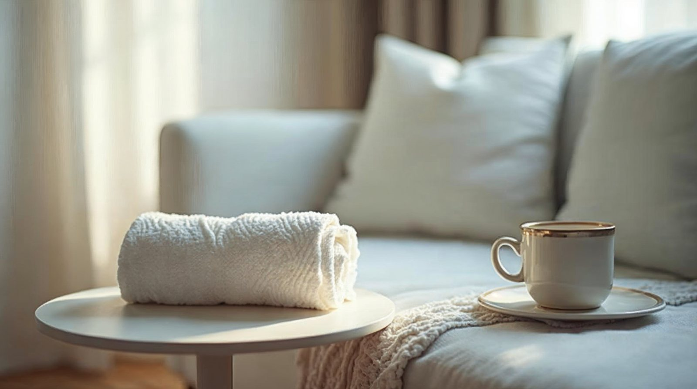

이종호 한의사 감수좋은꿈참사랑한의원 대표원장 (한의사 면허번호 19769)발행 2026-11-24 · 수정 2026-11-24
이 글의 차례
상도동처럼 언덕이 많은 동네에서 아기와 산책을 하다 보면 유모차를 미는 일이 생각보다 힘들다는 분이 많습니다. 오르막에서는 허리를 숙여 힘껏 밀고, 내리막에서는 유모차가 굴러가지 않게 손목에 힘을 주게 됩니다. 아기를 안고 수유하는 시간까지 더해지면 손목과 허리가 쉴 틈이 없습니다.
왜 이런 불편이 생길 수 있나요
- 출산 뒤 한동안은 몸의 회복과 함께 손목과 허리가 평소보다 예민하게 느껴지는 분이 많습니다.
- 오르막에서 허리를 숙여 밀고, 내리막에서 손목을 꺾어 버티는 동작이 반복됩니다.
- 아기를 안고, 수유하고, 기저귀를 가는 자세가 하루에도 수십 번 이어집니다.
- 밤중 수유로 잠이 쪼개지면 몸이 회복할 시간이 부족해집니다.
먼저 이렇게 여쭙니다
- 출산하신 지 얼마나 되셨나요?
- 하루에 유모차를 미는 시간이 얼마나 되나요?
- 오르막과 내리막 중 언제 더 불편한가요?
- 손목이 저리거나 밤에 더 아프지는 않나요?
일상에서 먼저 해 볼 수 있는 것
- 유모차 손잡이를 팔꿈치가 살짝 굽혀지는 높이로 맞추기
- 내리막에서는 손목을 꺾지 말고 몸을 유모차 가까이 두고 천천히 걷기
- 가능하면 경사가 덜한 길로 산책 코스 정하기
- 수유할 때는 쿠션으로 아기를 받쳐 손목과 허리의 부담 덜기
- 중간중간 멈춰 손목과 허리를 가볍게 풀기

한의원에서 함께 살필 수 있는 경우
- 유모차를 밀고 난 뒤 손목과 허리가 뻐근한 경우, 아기를 안고 밀고 드는 동작을 함께 살핍니다.
- 출산 뒤 잠이 쪼개지고 피로가 쌓인 경우, 잠과 기운을 함께 여쭙습니다.
- 수유 중인 경우, 한약이나 드시는 약은 진찰 뒤 상의해 정합니다.
좋은꿈참사랑한의원에서는 모든 분께 맥부터 짚으며 출산 시기와 수유 여부, 하루 육아 동작을 여쭙고, 필요하면 혀와 배(설진·복진)도 살핍니다. 그 뒤 침이나 추나, 한약 상담 등 지금 시기에 맞는 방법을 정하고, 귀가 전에는 집에서 바꿔 볼 자세를 알려 드립니다.
이렇게 기록해 오시면 상담이 쉬워집니다
- 출산일과 수유 방법(모유·분유·혼합)
- 하루 유모차·아기띠를 쓰는 시간과 주로 다니는 길
- 손목·허리가 가장 아픈 동작과 시간대
- 복용 중인 약과 영양제
이런 증상은 먼저 확인이 필요합니다
- 손에 힘이 빠져 물건을 자주 떨어뜨리는 경우
- 출산 뒤 고열이 나거나, 아랫배가 심하게 아프거나, 출혈이 갑자기 늘어난 경우
이런 신호가 있으면 한의원보다 가까운 병원이나 응급실을 먼저 찾으세요.

여쭙는 것
- 출산하신 지 얼마나 되셨나요?
- 하루에 유모차를 미는 시간이 얼마나 되나요?
- 오르막과 내리막 중 언제 더 불편한가요?
생활에서 해 볼 것
- 유모차 손잡이를 팔꿈치가 살짝 굽혀지는 높이로 맞추기
- 내리막에서는 손목을 꺾지 말고 몸을 유모차 가까이 두고 천천히 걷기
- 가능하면 경사가 덜한 길로 산책 코스 정하기
한의원에서 함께 살필 것
- 유모차를 밀고 난 뒤 손목과 허리가 뻐근한 경우, 아기를 안고 밀고 드는 동작을 함…
- 출산 뒤 잠이 쪼개지고 피로가 쌓인 경우, 잠과 기운을 함께 여쭙습니다.
- 수유 중인 경우, 한약이나 드시는 약은 진찰 뒤 상의해 정합니다.
먼저 확인이 필요한 신호
- 손에 힘이 빠져 물건을 자주 떨어뜨리는 경우
- 출산 뒤 고열이 나거나, 아랫배가 심하게 아프거나, 출혈이 갑자기 늘어난 경우
한눈에 보는 표
| 구분 | 핵심 |
|---|---|
| 여쭙는 것 | 출산하신 지 얼마나 되셨나요? 하루에 유모차를 미는 시간이 얼마나 되나요? |
| 생활에서 해 볼 것 | 유모차 손잡이를 팔꿈치가 살짝 굽혀지는 높이로 맞추기 내리막에서는 손목을 꺾지 말고 몸을 유모차 가까이 두고 천천히 걷기 |
| 한의원에서 함께 살필 것 | 유모차를 밀고 난 뒤 손목과 허리가 뻐근한 경우, 아기를 안고 밀고 드는 동작을 함께 살핍니다. 출산 뒤 잠이 쪼개지고 피로가 쌓인 경우, 잠과 기운을 함께 여쭙습니다. |
| 먼저 확인이 필요한 신호 | 손에 힘이 빠져 물건을 자주 떨어뜨리는 경우 출산 뒤 고열이 나거나, 아랫배가 심하게 아프거나, 출혈이 갑자기 늘어난 경우 |
자주 묻는 질문
수유 중에도 진료를 받을 수 있나요?
네. 오시면 수유 중이라고 꼭 말씀해 주세요. 침·추나·한약 가운데 무엇을 어떻게 할지 진찰 뒤 수유를 고려해 함께 정합니다.
아기띠와 유모차 중 무엇이 나은가요?
상황과 몸 상태에 따라 다르니, 각각을 쓸 때 어디가 불편한지 알려 주시면 함께 살핍니다.
아기를 데리고 가도 되나요?
네. 아기와 함께 오실 예정이면 예약할 때 미리 말씀해 주세요. 치료받는 동안 아기를 돌봐 줄 보호자와 함께 오시면 더 편합니다.
좋은꿈참사랑한의원은 재진 때 지난번 이야기부터 이어서 여쭙니다. 진료시간과 예약은 오시는 길에서 확인하세요.
어디서 상담받을 수 있나요?
좋은꿈참사랑한의원은 서울 동작구 만양로2길 2 신성빌딩 3층·5층(서울 동작구 상도동, 7호선 상도역 3번 출구 근처)에 있습니다. 한의사 3명(이종호 대표원장, 조영기 수석진료원장, 정원영 진료원장)이 진료합니다. 진료시간은 평일 09:30~20:00(점심 13:00~14:00), 토·일·공휴일 09:30~15:00이며, 방문 전 전화로 확인을 권합니다. 예약은 네이버 예약, 카카오톡 상담, 전화 02-815-7510로 받습니다.
이 글은 일반적인 건강 정보이며 개인의 진단이나 치료를 대신하지 않습니다. 증상이 있거나 복용 중인 약이 있다면 진료를 통해 확인하세요. 치료 효과는 개인마다 다를 수 있습니다.
작성 기준: 일반적으로 알려져 있는 건강 정보를 참고해 정리했습니다(대표원장 감수). 증상 기록은 1~2주 동안 하루 1회, 비슷한 시간에 적어 오시면 지난 상태와 비교하기 쉽습니다.